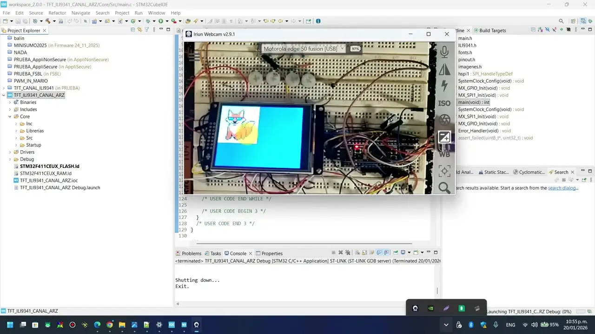

Se abre CubeMX, File > Load Project y se elige el .ioc. Sin hacer cambios se presiona GENERATE CODE y luego Open Project: CubeIDE se abre con el proyecto enlazado.
Hardware en CubeMX, software en CubeIDE.
Continuación de la clase 128 con la pantalla ILI9341. Primero se repasan las formas de abrir un proyecto que ya existe ahora que CubeMX y CubeIDE van por separado. Después se agrega el archivo imagenes.h con las imágenes guardadas como arreglos en flash, se muestran con draw_bitmap y se explica cómo convertir cualquier foto a arreglo C con LCD Image Converter en formato RGB565. Al final se recuerda ajustar el ancho y alto de la pantalla en ILI9341.h si tu TFT es de otro tamaño.

Se abre CubeMX, File > Load Project y se elige el .ioc. Sin hacer cambios se presiona GENERATE CODE y luego Open Project: CubeIDE se abre con el proyecto enlazado.
Hardware en CubeMX, software en CubeIDE.
Si el proyecto ya está en el workspace de CubeIDE, doble clic al .ioc abre CubeMX. Cada cambio de hardware se hace allí y con GENERATE CODE pasa al IDE.
Si el proyecto no está en el workspace: File > Open Projects from File System (Import), se busca la carpeta y Finish. También puedes dar doble clic al .ioc desde el explorador de Windows para abrirlo en CubeMX y generar código.
Se copia imagenes.h a la carpeta Librerias y se incluye en el main. Las pruebas de texto de la clase anterior se dejan comentadas.
Las imágenes se guardan en la flash del micro, que no es muy grande. Más adelante se verá cómo leerlas desde una memoria SD o una flash SPI.
#include "imagenes.h"draw_bitmap recibe la posición x, y, la escala y el nombre del arreglo.
En el video falló primero porque la carpeta de imágenes copiada era una versión vieja que no tenía el arreglo zorro. Si el compilador dice que no existe, revisa que el nombre esté en imagenes.h.
draw_bitmap(0, 0, 1, zorro); // x, y, escala, imagenEn la pantalla aparece el zorro en la esquina superior izquierda.
Se abre LCD Image Converter y File > Open. En el cuadro de diálogo elige "todos los archivos" para ver .jpg y .png.
La imagen tiene que ser más pequeña que la pantalla (máximo 320x240 en horizontal). Si no, redimensiónala antes con cualquier editor. En el video, un perro de 320x209.
Options > Conversion. En Preset se elige Color R5G6B5 (formato 565 de 16 bits que usa la pantalla).
En la pestaña Image: Block size 16 bit, Split to rows marcado y Byte order Little-Endian. OK.
Con Show Preview aparece todo el arreglo en hexadecimal; se selecciona todo y se copia.
Al final de imagenes.h se crea un arreglo nuevo, se escriben primero el ancho y el alto, y debajo se pegan los datos copiados.
Se cambia el nombre en draw_bitmap(0, 0, 1, lobo), se compila y se programa. La carga tarda un poco más por el tamaño del arreglo.
const unsigned int lobo[] = {
320, 209, // ancho, alto
/* pegar aqui los datos del Preview */
};En ILI9341.h, en la zona de configuración, están las dimensiones de la pantalla. Si tu TFT es de otro tamaño, cámbialas aquí.
// Dimensiones de la pantalla
#define TFT_W 240
#define TFT_H 320